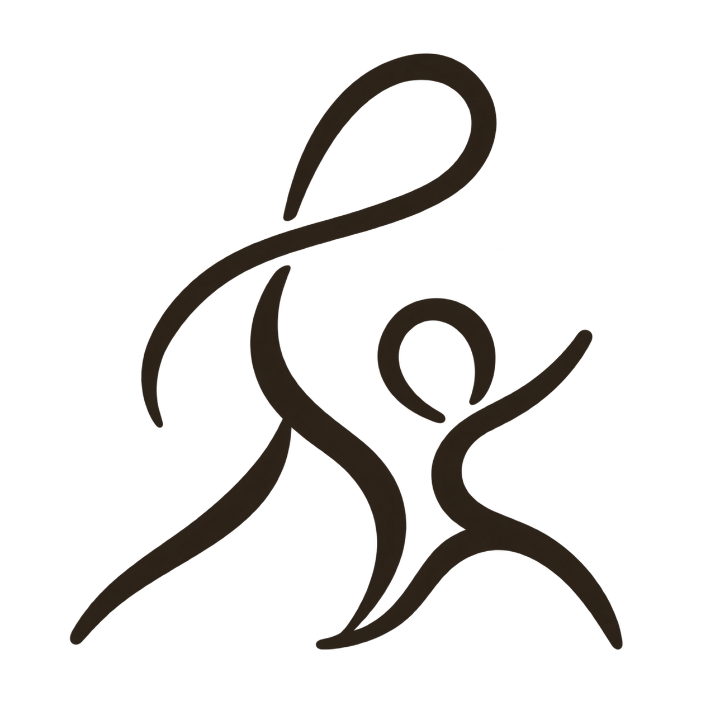

Erő és kontroll
A gyakorlatoknál a kivitelezésre, a mozgástartományra és a megfelelő terhelésre figyelünk. Saját testsúllyal és eszközökkel is lehet dolgozni.

mamas&minisVissza FannihozFunkcionális edzés
Guggolás, emelés, tolás, húzás. Ismerős mozdulatok, amelyekből változatos, egész testet átmozgató edzés áll össze. A cél, hogy magabiztosabban mozogj az órán és a hétköznapokban.
A funkcionális edzésben több izomcsoport dolgozik együtt. Az erősítő feladatokat koordinációt és állóképességet igénylő gyakorlatok egészítik ki.
A gyakorlatoknál a kivitelezésre, a mozgástartományra és a megfelelő terhelésre figyelünk. Saját testsúllyal és eszközökkel is lehet dolgozni.
Az edzésekben helyet kapnak az alapmozgások, az egyensúlyt igénylő feladatok és a lendületesebb szakaszok. Az egyes gyakorlatok könnyebb és nehezebb változatokkal is végezhetők.
Most kezdesz, vagy már rendszeresen edzel? A feladatok nehézségét és a terhelést a tapasztalatodhoz igazítjuk, hogy legyen mire építened.
Az első alkalom előtt átbeszéljük a korábbi edzéseidet, a céljaidat és azt, van-e olyan mozdulat vagy terhelés, amire külön figyelnünk kell.
Tovább a kezdéshez ↗